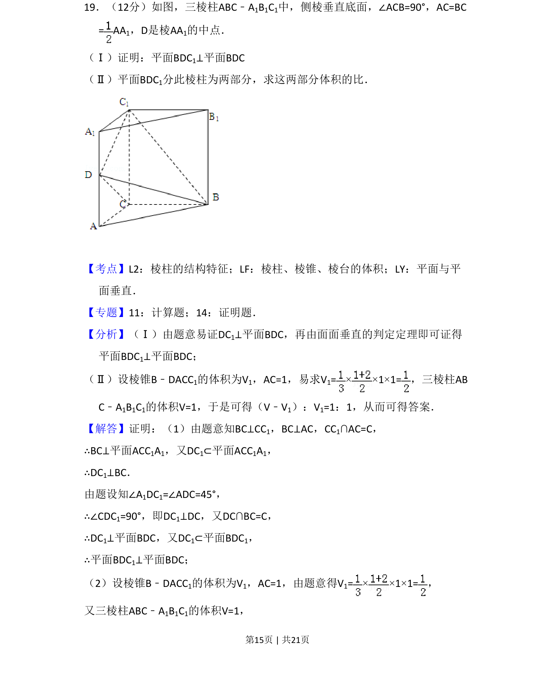
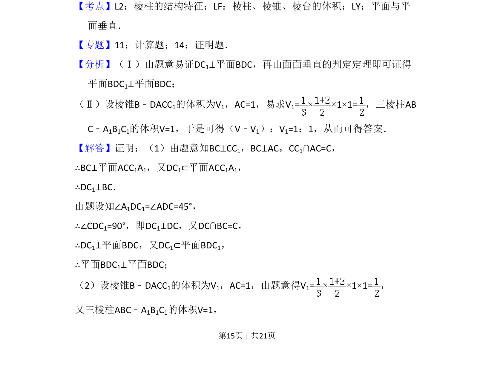
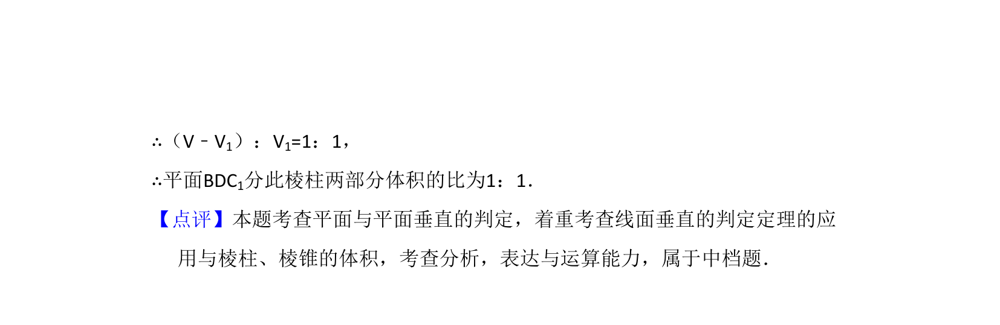

考点：棱柱结构特征 体积计算 面面垂直

证明面面垂直关系及棱柱分割后两部分体积比的计算


📄 原 PDF 第 15 页：
素材/真题/吉林/2008-2024·（吉林）数学高考真题/2012年高考数学试卷（文）（新课标）（解析卷）.pdf
19．（12分）如图，三棱柱ABC﹣A1B1C1中，侧棱垂直底面，∠ACB=90°，AC=BC = AA 1，D是棱AA1的中点． （Ⅰ）证明：平面BDC1⊥平面BDC （Ⅱ）平面BDC1分此棱柱为两部分，求这两部分体积的比．
【考点】L2：棱柱的结构特征；LF：棱柱、棱锥、棱台的体积；LY：平面与平 面垂直．菁优网版权所有 【专题】11：计算题；14：证明题． 【分析】（Ⅰ）由题意易证DC1⊥平面BDC，再由面面垂直的判定定理即可证得 平面BDC1⊥平面BDC； （Ⅱ）设棱锥B﹣DACC1的体积为V1，AC=1，易求V1=× ×1×1=，三棱柱AB C﹣A1B1C1的体积V=1，于是可得（V﹣V1）：V1=1：1，从而可得答案． 【解答】证明：（1）由题意知BC⊥CC1，BC⊥AC，CC1∩AC=C， ∴BC⊥平面ACC1A1，又DC1⊂平面ACC1A1， ∴DC1⊥BC． 由题设知∠A1DC1=∠ADC=45°， ∴∠CDC1=90°，即DC1⊥DC，又DC∩BC=C， ∴DC1⊥平面BDC，又DC1⊂平面BDC1， ∴平面BDC1⊥平面BDC； （2）设棱锥B﹣DACC1的体积为V1，AC=1，由题意得V1=× ×1×1=， 又三棱柱ABC﹣A1B1C1的体积V=1，